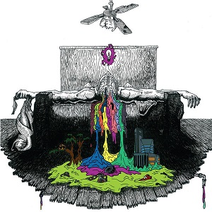
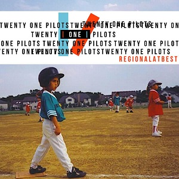
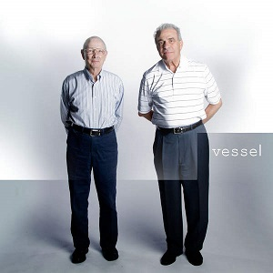

A banda foi formada em 2009, em Columbus, Ohio, por amigos de faculdade. Eles eram: Tyler Joseph, Nick Thomas e Chris Salih. Tyler Joseph teve a ideia do nome da banda enquanto estudava "All My Sons", uma peça de Arthur Miller que contava a história de um homem que deve decidir o que é melhor para sua família depois de causar a morte de 21 pilotos durante a Segunda Guerra Mundial, porque ele conscientemente os enviou peças defeituosas para o bem de seu negócio. Josh Dun explicou que esta história de dilema moral foi a inspiração para o nome da banda. Em 29 de dezembro de 2009, eles lançaram seu álbum de estreia, intitulado Twenty One Pilots, e começaram um tour em Ohio.
Em 2010, a banda lançou duas faixas inéditas oficialmente em sua conta no SoundCloud. Estas faixas incluíram um spin-off original de "Time to Say Goodbye", de Andrea Bocelli e Sarah Brightman, e uma capa de "Jar of Hearts", de Christina Perri. Eles estavam originalmente disponíveis para download gratuito, embora a opção tenha sido removida desde então.
Chris Salih saiu da banda em 8 de maio de 2011, e Nick Thomas também saiu em aproximadamente um mês depois, em 3 de junho de 2011. Os dois se despediram dos fãs na página oficial da banda no Facebook. Então, Tyler Joseph se juntou a Josh Dun, ex-baterista da banda House of Heroes.
| foto | nome | Data de Nascimento | Instrumento |
|---|---|---|---|
| Tyler Joseph | 1 de dezembro de 1988 | Cantor-compositor, multi-instrumentalista | |
| Josh Dun | 18 de junho de 1988 | Bateria, percussão, caixa de ritmos. |
| capa | Nome | Ano de Lançamento |
|  | Twenty One Pilots | 2009 |
|  | Regional at Best | 2011 |
|  | Vessel | 2013 |